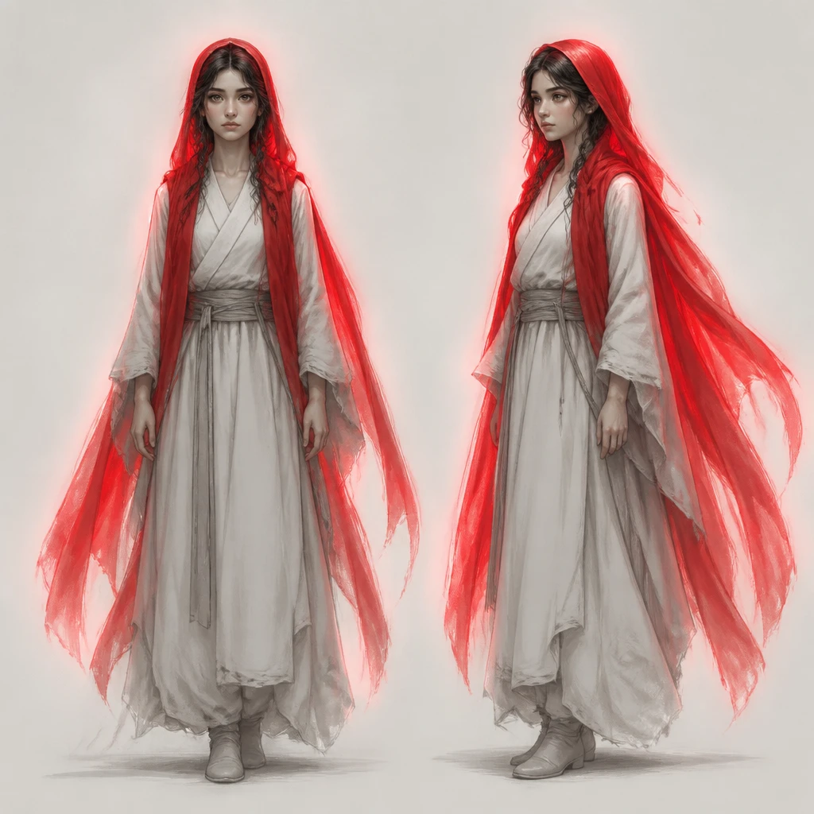
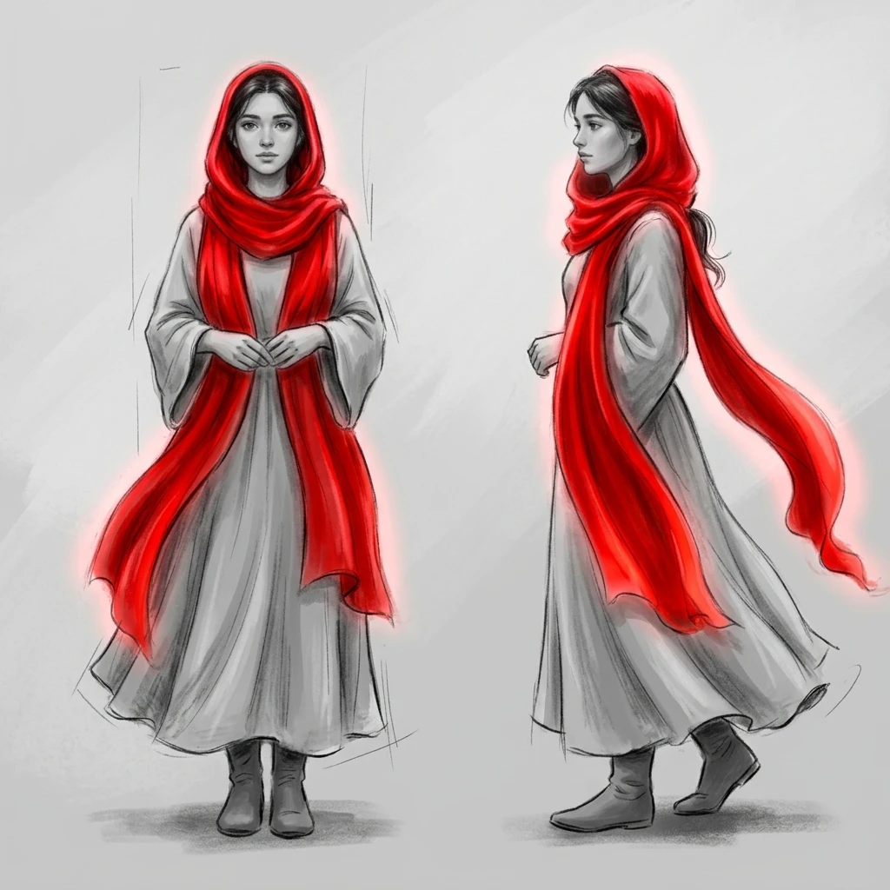

scarf-openai.png

- origin
- generated
- tool
- gen 0.1.0
- model
- gpt-image-2 (openai)
- prompt
- Character concept sheet, front and three-quarter views: a long, flowing head scarf worn by a young heroine in a simple pale robe. The scarf is the only saturated color in the image, a glowing scarlet red with light bleeding from its edges; everything else is soft greyscale. Painterly, hand-drawn look, clean neutral background, no text, no logos.
- license
- proprietary
sha256 d7cb98db165167e95f13bc0d9bb763def9828f2a24817e72980eccf3d7c7b15c
scarf-gemini.png

- origin
- generated
- tool
- gen 0.1.0
- model
- gemini-3.1-flash-image (gemini)
- prompt
- Character concept sheet, front and three-quarter views: a long, flowing head scarf worn by a young heroine in a simple pale robe. The scarf is the only saturated color in the image, a glowing scarlet red with light bleeding from its edges; everything else is soft greyscale. Painterly, hand-drawn look, clean neutral background, no text, no logos.
- license
- proprietary
sha256 903a6bf753c979b0a88ff887019802b0c84ee876a605859d7eb1f53ab536622c